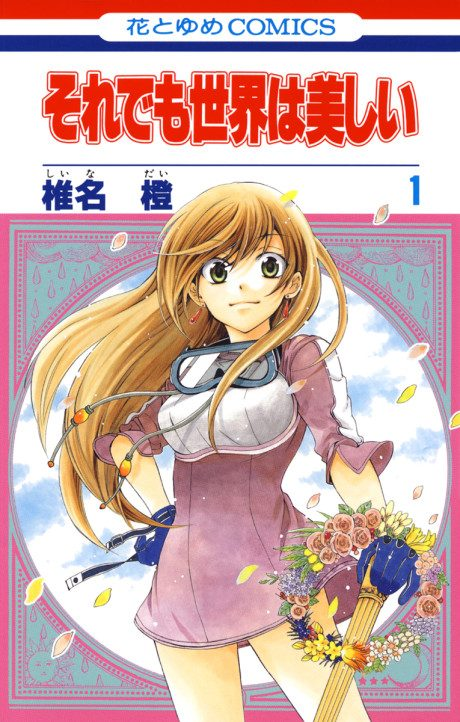

The World is Still Beautiful
それでも世界は美しい
After the anime, read the manga from Chapter 20.
7.2AniList score
—Animeter, no votes yet
12episodes
Anime finished. Where does the manga pick up?
Start at Chapter20
The anime adapts through chapter 19, so start at chapter 20 (volume 4). The manga is finished.
119150 end
Season 1Start reading here
More like The World is Still Beautiful
 Manga Ch. 317.5
Manga Ch. 317.5
 Unclear7.7
Unclear7.7
 Unclear7.3
Unclear7.3
 Unclear7.1
Unclear7.1
 Manga Vol. 77.3
Manga Vol. 77.3
 Manga Ch. 658.0
Manga Ch. 658.0